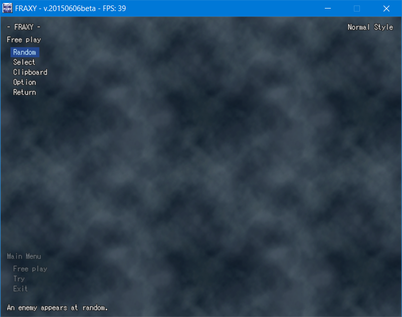
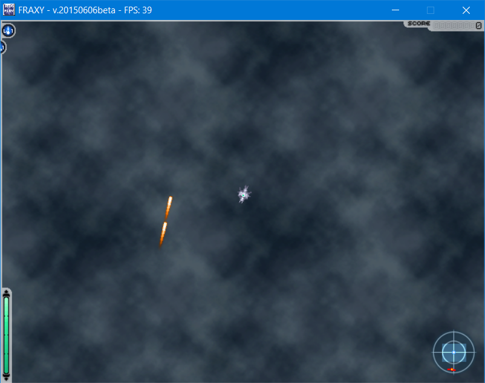

This is the first in a series of tutorials about FRAXY. This tutorial covers basic FRAXY gameplay.
Please note that virtually every element of this gameplay is at liberty to be modified by the designer of the boss you are facing. This tutorial describes unmodified gameplay only.
Fraxy is a top-down shoot-em-up, or shmup, game.
In FRAXY, the player is able to move and rotate freely on a 2D plane. Their objective is to battle a powerful boss machine, evading its attacks and firing back to break through its defenses and ultimately, destroy the core at the heart of the machine.
Before running the game for the first time, you should run config.exe. This is the game's settings configurator, and it is here that you can adjust options such as various visual settings, font size, control bindings and so on. In particular, take note of the "View change" keybind. You will need it later. Once you believe you are comfortable with your settings, feel free to run fraxy.exe.

This is the game's main menu. The first option, Free Play, lets you simply face a boss of your choosing. The second, Try, lets you load a Try script file to attempt a scored run of a pre-made challenge.
For now, let's stick to Free Play. Click the Free Play button.
The last button here, Return, will take you back to the main menu. The Option button allows you to configure various settings about your Free Play session. The remaining three are different methods for selecting the boss you want to fight.
For this tutorial, we will be using the Clipboard option.
Some enemy data is provided below. Select all of the below text and copy it (Right-click and select "Copy", or press CTRL+C on your keyboard).
Now switch back to FRAXY, and click the Clipboard button. You should load into something like the below encounter.
Take some time to get used to moving around. By default, you move with the WASD keys, and aim with the mouse. Notice that as you move your mouse around, the camera moves a bit to stay ahead of your ship. If you find this effect disorienting, you can press the "View change" button to keep the camera centered on your ship. If you have forgotten what the "View change" button is, you can run config.exe and check your input bindings at any time.